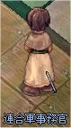
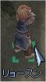
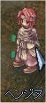

画像にリンクがはってあるものは、クリックすると別窓で大きめサイズが表示されます。
[セルザン]
所在地；ミッドガルド連合軍駐屯地中央南西建物内 |
  |
[リョースン]
所在地；ミッドガルド連合軍駐屯地（165,245） |
  |
[ヒュー]
所在地；ミッドガルド連合軍駐屯地（247,255） |
  |
[ヘンジヌ]
所在地；ミッドガルド連合軍駐屯地（222,218） |
  |
back
(c) Gravity Co., Ltd. & Lee MyoungJin(studio DTDS). All rights reserved.
(c) GungHo Online Entertainment, Inc. All Rights Reserved.
当コンテンツの再利用（再転載・配布など）は、禁止しています。